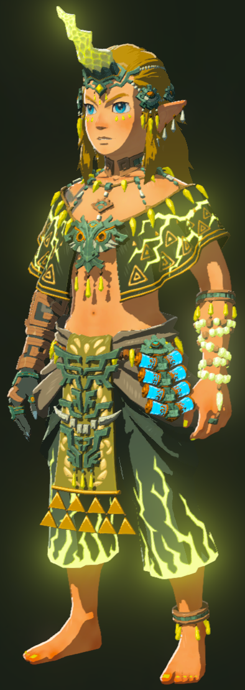
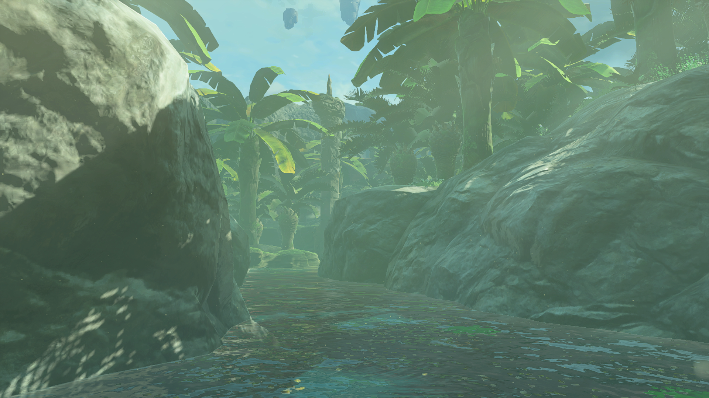
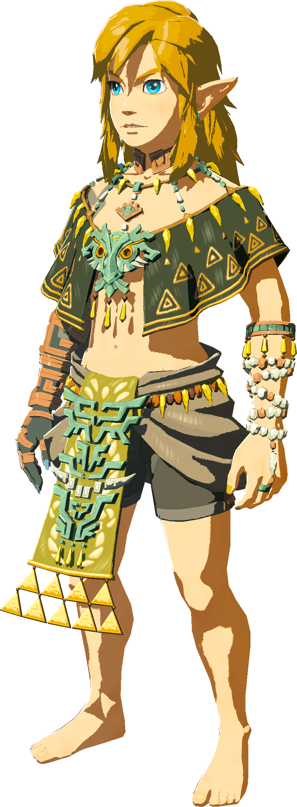
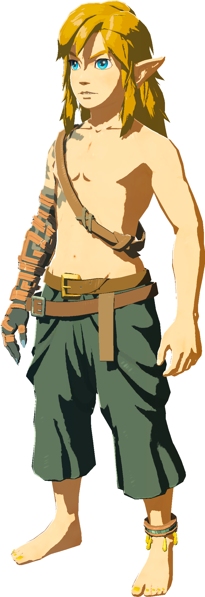
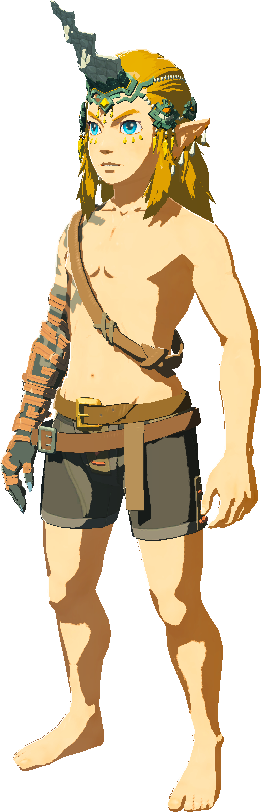

图：游戏内模型图——林克穿齐雷光套装，雷雨时蓄力攻击强化发动时浑身带电，头饰的角与衣服上的纹路都在放电。
- 先说结论：主线套装，雷雨天加攻击、不防雷
- 适合谁：三类玩家最值得跑这一趟
- 前置准备：先推进主线到环卡遗迹的秘密
- 卡兹溜河在哪：从泡泡拉高地鸟望台往东南飞
- 三件分别在哪：雷光服、裤子、头饰总表
- 雷光服：湖东岸遗迹，塔乌罗营地对岸
- 雷光裤子：河西岸遗迹，碎石墙后
- 雷光头饰：河南岸遗迹，藤蔓洞口后
- 祭坛与雷云岛：穿齐供奉，闪电劈开雷云
- 套装效果：雷雨时电流攻击与雷雨时蓄力攻击强化
- 强化表：每件 3 到 20，三件满级 60
- 强化材料从哪刷：电流果到古栗欧克的雷电犄角
- 和火焰、暴风雪、橡胶比：三件天气套装与防雷
- 回购与丢失：萨格诺的私人收藏，4000 卢比一件
- 翻车点：八件容易翻车的事
- 哈里的取舍：先拿服，两星够用再升满
- 一句话总结
先说结论：主线套装，雷雨天加攻击、不防雷
雷光套装是《王国之泪》里唯一跟着主线走的天气套装：雷光头饰、雷光服、雷光裤子，三件全在法隆地区卡兹溜河沿岸的左纳乌遗迹宝箱里，跟着主线“环卡遗迹的秘密”一路往南走就能拿齐，不用花一卢比，不用打任何 Boss。每件基础防御 3，升满四星 20，三件满级一共 60。
它的卖点只有一句：雷雨时电流攻击——雷雨天里穿上它，攻击力直接涨一档；三件都升到两星再一起穿，还解锁套装加成“雷雨时蓄力攻击强化”，雷雨天蓄力攻击更快，蓄力攻击与连段结尾还会放出一道电爆。法隆和格鲁德一带常年雷雨，穿上它等于白嫖一个攻击加成。
先把丑话说在前面：它只加攻击，不防雷。雷雨天穿着它站在空地上，雷照样劈你；金属武器拿在手里，雷也照样找你。这套衣服的导电材质是左纳乌祭祀仪式用的，不是绝缘用的。想防雷去穿橡胶套装或者戴护雷头盔，别指望这套替你挡雷。
适合谁：三类玩家最值得跑这一趟
- 第一类是推主线的玩家：第五贤者的任务必经卡兹溜河，拿这套衣服本身就是主线的一环，顺手就能拿齐，不拿白不拿。
- 第二类是喜欢在雷雨天打架的玩家：法隆、格鲁德常年打雷下雨，雷雨时电流攻击等于常驻加成，刷怪、清营地都更快。
- 第三类是套装收集玩家：左纳乌祭祀服，导电材质的纹路、头饰上那只角，全游戏独一份；三件凑齐摆在衣柜里，本身就是一件藏品。
反过来，如果你只在晴天活动、很少去法隆，这套对你就是件防御 3 的普通衣服——它的加成只在雷雨天生效，平时一点用没有；想随时随地加攻击，去穿野性或者蛮族套装。
前置准备：先推进主线到环卡遗迹的秘密
拿这套有一条硬性前置：先把主线推进到“环卡遗迹的秘密”。要先完成四座神殿、打完海拉鲁城堡异变，再回卡卡利科村找帕雅和塔乌罗，拍下环卡遗迹石板的样子给塔乌罗看，任务才会指向卡兹溜湖。没走到这一步就跑去河边，塔乌罗不在湖边，跟着任务走最顺，别自己瞎跑。
- 第一是破岩的家伙：雷光裤子的遗迹门口堵着碎石，带一把破岩武器（石头余料的武器就行）或者几朵炸弹花。
- 第二是利刃或火：雷光头饰的遗迹门口垂着藤蔓，利刃砍开或者点火烧掉都行，带一把单手剑最顺手。
- 第三是游泳的准备：雷光服的遗迹就在塔乌罗营地旁边的小遗迹里，不用游湖，进洞找塔乌罗，开上层平台的宝箱拿雷光服。
- 第四是趁手的武器和弓箭：带把趁手的武器和弓箭再钻遗迹，别空手进去。
卡兹溜河在哪：从泡泡拉高地鸟望台往东南飞
卡兹溜河在法隆地区东南部，卡兹溜湖往南流出的蛇形河，河岸两边立着一根根高大的龙柱，认龙柱就认对了地方。最顺的走法：泡泡拉高地鸟望台起飞往东南，飞过勇气之泉就是卡兹溜湖；湖边有塔乌罗的营地，一堆篝火，认篝火就认对了地方。
三处遗迹沿河自北向南排开，认河走就不会丢：湖东岸是雷光服，河西岸是雷光裤子，河南岸是雷光头饰。沿途不用绕路，顺着河岸走，一趟就能拿齐。

图：游戏实机截图——卡兹溜河沿岸，河边立着高大的龙柱，三处遗迹就顺着这条河排开。
三件分别在哪：雷光服、裤子、头饰总表
三件散在河岸的三处遗迹里，拿的顺序也有讲究：雷光服最近，裤子其次，头饰最南。位置总表如下：
| 部件 | 在卡兹溜河沿岸的位置 | 进门办法 |
|---|---|---|
| 雷光服 | 卡兹溜湖东岸遗迹，塔乌罗营地对岸 | 直接进，塔乌罗就在里面 |
| 雷光裤子 | 卡兹溜河西岸遗迹，达姆泽尔树海一侧 | 碎石堵门，破岩武器或炸弹花破开 |
| 雷光头饰 | 卡兹溜河南岸遗迹，河湾处 | 藤蔓遮门，利刃砍开或点火烧掉 |
三处遗迹门口都立着龙柱，远远望见龙柱就是遗迹到了；宝箱都在遗迹最里面的房间里，进门直走就能看见。
雷光服：湖东岸遗迹，塔乌罗营地对岸
雷光服：三件里最先拿到的一件。从塔乌罗的营地往旁边看，遗迹入口就在营地边上，进遗迹找塔乌罗，他会告诉你遗迹里有只宝箱只有你能开——开箱拿雷光服。
提醒一句：这件是三件里最顺手的一件，塔乌罗本人就站在遗迹里给你指路，跟着任务标记走，闭着眼睛都不会丢。

图：游戏内模型图——林克穿上雷光服，导电材质的纹路在雷雨天里放电。
雷光裤子：河西岸遗迹，碎石墙后
雷光裤子：河西岸的遗迹里。出雷光服的遗迹顺河往南走，河西岸第二处遗迹就是它，门口堵着碎石，破岩武器或者炸弹花破开，进去开箱拿雷光裤子。
提醒：碎石墙要一块一块破，炸弹花多带几朵，别只带一朵就出发。

图：游戏内模型图——林克穿上雷光裤子，左纳乌祭祀服的下装。
雷光头饰：河南岸遗迹，藤蔓洞口后
雷光头饰：三件里最南的一件。继续顺河往南，绕过河湾，第三处遗迹在河南岸，门口垂着藤蔓，利刃砍开或者点火烧掉，进去开箱拿雷光头饰，三件就齐了。
提醒一句：藤蔓用利刃砍开或者点火烧掉都行，炸弹箭也可以炸开藤蔓；单手剑砍两刀，或者扔个火果点着，烧干净再进。

图：游戏内模型图——林克戴上雷光头饰，头饰上有一只导电的角。
祭坛与雷云岛：穿齐供奉，闪电劈开雷云
三件拿齐别急着走：穿齐三件走到卡兹溜河西南端（蛇尾）的祭坛，把一颗左纳乌能源供奉上去，闪电会同时劈中河岸所有的龙柱高塔，笼罩雷云岛的雷暴当场散开，雷云岛现身，主线继续往第五贤者走。
这一步是拿这套衣服真正的意义：它不只是件衣服，是开路的钥匙。左纳乌的石板上写得明白，穿上这套衣服、供奉电荷，雷云才会让路。提醒两点：第一，供奉前确认三件都穿在身上，少一件祭坛没反应；第二，左纳乌能源平时多攒几颗，宝箱和构装体身上都有，别到了祭坛才发现包里是空的。
套装效果：雷雨时电流攻击与雷雨时蓄力攻击强化
雷光套装的效果机制分两层：单件效果是“雷雨时电流攻击”，雷雨天里攻击力提升，穿一件就生效，穿三件也不叠加；三件都升到两星、一起穿上，解锁套装加成“雷雨时蓄力攻击强化”，雷雨天蓄力攻击速度变快，蓄力攻击与连段结尾还会放出一道电爆。
哈里多说一句：这套的加成只在“雷雨天”生效，普通下雨天不算——天上没打雷，它就是件防御 3 的普通衣服。法隆、格鲁德一带雷雨多，穿上它等于白嫖加成；晴天为主的地区，穿它还不如穿野性套装。
强化表：每件 3 到 20，三件满级 60
雷光套装每件初始防御 3，升满四星到 20，三件满级一共 60 防御。强化要找大妖精：开一座泉升一星，开两座升两星，开三座升三星，开四座升四星。三件的强化材料完全一样，单件材料表如下：
| 等级 | 防御 | 材料（每件） | 卢比 |
|---|---|---|---|
| 初始 | 3 | — | — |
| ★ | 5 | 电流果 ×3 | 10 |
| ★★ | 8 | 电麻蜥蜴战士的犄角 ×5、酥麻凤蝶 ×3 | 50 |
| ★★★ | 12 | 电击莱克的胃石 ×5、酥麻蜻蜓 ×5、大的左纳乌能源 ×3 | 200 |
| ★★★★ | 20 | 古栗欧克的雷电犄角 ×5、酥麻鳟鱼 ×10、大的左纳乌能源 ×5 | 500 |
三件全满级一共要：电流果 9 个、电麻蜥蜴战士的犄角 15 个、酥麻凤蝶 9 只、电击莱克的胃石 15 个、酥麻蜻蜓 15 只、大的左纳乌能源 24 颗、古栗欧克的雷电犄角 15 个、酥麻鳟鱼 30 条、2280 卢比。
升星的节奏建议：先把三件都升到两星，防御 8×3=24，顺手解锁套装加成“雷雨时蓄力攻击强化”，材料只要电流果、电麻蜥蜴战士的犄角和酥麻凤蝶，相对好凑；三星、四星要电击莱克的胃石、酥麻蜻蜓、古栗欧克的雷电犄角和酥麻鳟鱼，等装备成型了再补。提醒一句：大妖精的泉要一座一座开，想升四星先把四座大妖精之泉都找齐，位置见本站的大妖精完全指南。
强化材料从哪刷：电流果到古栗欧克的雷电犄角
强化材料分四档，各有固定来源：
| 材料 | 来源与刷法 |
|---|---|
| 电流果 | 法隆一带的灌木上结着，平时路过顺手摘，9 个跑一圈就够了 |
| 电麻蜥蜴战士的犄角和酥麻凤蝶 | 电麻蜥蜴战士的犄角是打电麻蜥蜴战士掉的，格鲁德沙漠与法隆一带都有；酥麻凤蝶雨天/雷雨天出没，雷雨天去法隆草地抓，平时难见，雨天别错过 |
| 电击莱克的胃石、酥麻蜻蜓和大的左纳乌能源 | 电击莱克的胃石是打洞穴里的电莱克掉的；酥麻蜻蜓在法隆水边的草丛里飞；大的左纳乌能源从宝箱和构装体身上来，平时多攒着 |
| 古栗欧克的雷电犄角和酥麻鳟鱼 | 古栗欧克的雷电犄角是四星的门槛，打古栗欧克掉的——古栗欧克是三头龙，雷属性那只掉古栗欧克的雷电犄角，弓箭射角最稳；酥麻鳟鱼在温暖水域钓鱼，30 条是这套最费工夫的材料，平时钓鱼别漏了攒着 |
和火焰、暴风雪、橡胶比：三件天气套装与防雷
雷光、火焰、暴风雪是三胞胎：机制一模一样，只是天气不同。数值总表如下：
| 套装 | 单件效果 | 套装加成（两星解锁） | 满级防御（三件） | 拿法 |
|---|---|---|---|---|
| 雷光套装 | 雷雨时电流攻击 | 雷雨时蓄力攻击强化 | 60 | 卡兹溜河三处遗迹，免费 |
| 火焰套装 | 高温时火焰攻击 | 高温时蓄力攻击强化 | 48 | 三处洞穴，免费 |
| 暴风雪套装 | 低温时冷气攻击 | 低温时蓄力攻击强化 | 48 | 三处洞穴，免费 |
| 橡胶套装 | 防电击 | 雷无效 | 60 | 三处地点散落，详见本站橡胶套装篇 |
哈里的判断：论泛用，三件天气套装都不如野性套装——野性的攻击提升随时生效，天气套装只在特定天气生效；论拿的顺手，雷光最好——主线顺路白嫖，火焰和暴风雪要专门跑三趟洞穴；论保命，橡胶才是防雷正解，雷光穿去雷雨天等于主动找劈。给个实在的建议：雷雨天换雷光、热天换火焰、冷天换暴风雪，雨停了就换回野性；去雷云密布的地方之前，先把橡胶套装穿上，别穿雷光去挡雷。
回购与丢失：萨格诺的私人收藏，4000 卢比一件
雷光套装的三件都能买回来，价格不便宜：完成哈特诺村的“市长选举”情节挑战之后，村里的服饰店店主萨格诺会开私人收藏，头饰、衣服、裤子每件 4000 卢比，三件全买回来一共 12000 卢比。
哈里的建议就一句：别卖。12000 卢比听起来不贵，但当初是 0 卢比白嫖的，缺卢比先卖矿石和多余的怪物材料，别动这套。提醒一句：萨格诺的私人收藏只卖你拿过的东西，没拿过头饰就去买头饰，萨格诺是不会卖给你的——先下卡兹溜河把三件都拿到手，再谈回购。
翻车点：八件容易翻车的事
- 没推进主线就跑去河边：塔乌罗不在湖边，跟着任务走最顺，别自己瞎跑。
- 拿雷光当防雷穿：它只加攻击不防雷，雷雨天穿它站空地，雷照样劈你。
- 以为普通下雨也加攻击：加成只在“雷雨天”生效，天上没打雷，它就是件防御 3 的普通衣服。
- 忘了穿齐三件去祭坛：供奉前确认三件都穿在身上，少一件祭坛没反应。
- 藤蔓堵门不会开：利刃砍开或者点火烧掉，炸弹箭也可以炸开藤蔓，单手剑砍两刀或者扔个火果点着就行。
- 碎石墙只带一朵炸弹花：裤子的遗迹门口碎石要一块一块破，炸弹花多带几朵。
- 升满指望开局就能办到：四星要 15 个古栗欧克的雷电犄角和 30 条酥麻鳟鱼，开局打不了古栗欧克，别急着升满，先升到两星够用再说。
- 只升一件等两星出电爆：套装加成要三件都升到两星才解锁，只升一件是等不来的。
哈里的取舍：先拿服，两星够用再升满
三件里先拿哪件？先拿雷光服：塔乌罗的营地对岸就是它，是三件里最近的一件，拿了立刻就有一件防御 3 的衣服。裤子第二：顺河往南破碎石墙再进。头饰最后：河南岸砍藤蔓，最南的一件留到最后。
拿齐之后别急着升满：先把三件都升到两星，防御 8×3=24，顺手解锁“雷雨时蓄力攻击强化”，够打中期了；三星、四星的材料（电击莱克的胃石、酥麻蜻蜓、古栗欧克的雷电犄角和酥麻鳟鱼）留到后期富余了再补。最后提醒一句：这套衣服最大的分水岭是天气——天天在法隆、格鲁德跑的玩家，它就是白嫖的攻击加成；只在晴天活动的玩家，它就是件防御 3 的普通衣服，先想清楚自己常去哪，再决定升不升满。
一句话总结
雷光套装是《王国之泪》里最顺路的一套衣服：跟着主线走到卡兹溜河，三只遗迹宝箱开箱即得，每件防御 3，升满 20，雷雨时电流攻击、两星解锁雷雨时蓄力攻击强化；记住它只加攻击不防雷，防雷穿橡胶套装。